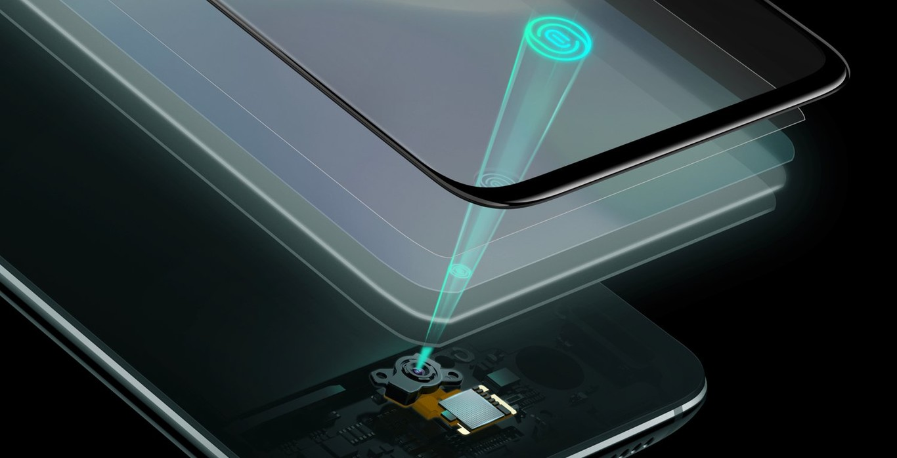

¿Qué es un lector de huella dactilar?
.jpg)
Un escáner de huellas dactilares, a menudo denominado lector o sensor de huellas dactilares, es un dispositivo electrónico diseñado para capturar y analizar digitalmente patrones de huellas dactilares. La función principal de estos escáneres es brindar autenticación y seguridad, ya que las huellas digitales son únicas para cada individuo, lo que las convierte en una forma confiable de confirmar la identidad de una persona.
CLOCKIT. Tipos de escáneres de huellas dactilares. [en línea]. [consulta: 12 diciembre 2024].
El lector de huella dactilar se utiliza ampliamente en dispositivos electrónicos, como teléfonos inteligentes, tabletas, computadoras portátiles y sistemas de seguridad, gracias a su capacidad para ofrecer un nivel de identificación seguro y conveniente. Este dispositivo forma parte de la tecnología biométrica, que se basa en el reconocimiento de características físicas o conductuales únicas de las personas.
¿Para qué sirve?
El sensor de huella dactilar, también conocido como sensor biométrico, tiene como función principal la autenticación de identidad. Este dispositivo puede leer, almacenar e identificar las huellas digitales de los usuarios, lo que permite su uso en diversas aplicaciones, tales como:
- Seguridad de dispositivos móviles.
- Control de acceso.
- Autenticación en aplicaciones y transacciones.
- Registro y verificación de identidad
¿Cómo funciona un lector de huella?
Un sistema de escáner de huellas dactilares tiene dos funciones básicas. Por un lado, necesita obtener una imagen de tu dedo y por otro, debe determinar si el patrón de crestas y valles de esa imagen coincide con el patrón de crestas y valles en imágenes previamente escaneadas y guardadas.
-

El escaneo de huellas dactilares es una forma de biometría fisiológica que analiza sus características físicas para autenticar tu identidad. Básicamente, reconoce que tu huella digital te pertenece a ti y a nadie más. Todos tenemos marcas de identificación únicas en los dedos que se utilizan para crear una huella digital. Estos no se pueden cambiar ni eliminar, por lo que son un buen indicador de identidad para los procedimientos de seguridad.
INLOC ROBOTICS. Lector de huella digital. [en línea]. [consulta: 11 diciembre 2024].